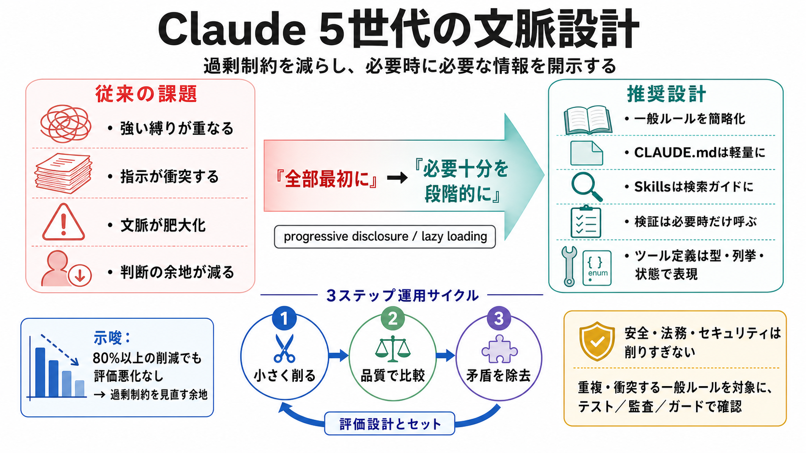

Anthropic cut 80% of Claude Code's system prompt for the Claude 5 ...
The move from hard rules to trusting the model's judgment lines up with what I've run into. Those strict never do X line…

The move from hard rules to trusting the model's judgment lines up with what I've run into. Those strict never do X line…
model in each category and the second-best score is underlined. Results for previous models show variance from previous …
MindStudio AI ModelsAI Media WorkbenchAgent Skills PluginWorkflow Capabilities Pricing UniversityDocumentation BlogA…
Compared with Claude Opus 4.8, the improvements most relevant to prompting are: `low` `medium` `xhigh` ## Response l…
After multiple weeks of internal testing and no regressions in the set of evaluations we ran, we felt confident about th…